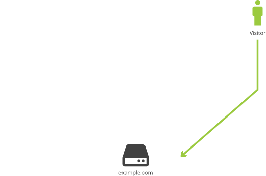

Types
Internet Control Message Protocol (ICMP) flood
There are three types of ICMP flooding DoS attacks: The smurf attack, the ping flood and the ping of death. The smurf attack aims to do serious damage to a network service, either individually as a user or towards an entire institution. The process is as follows:
- The hacker selects/indentifies the IP address of a select victim
- The hacker identifies at least one intermediary site to amplify the attack, however they usually select more than one to further disguise the attack
- The hacker sends a large amount of ICMP packets at the broadcast address of the intermediary site. These packets have the source IP address faked to look like it's in fact the victim's.
- The intermediary website delivers the broadcast to all hosts on their network
- Hosts reply to victim network and the victim's computer is flooded with traffic, slowing it down to the point where it becomes impossible to work on.
To prevent a smurf attack one should switch off the broadcast address feature of the external router and firewall as such a feature is seldom used. On Cisco routers the command no ip directed-broadcast should be applied to each interface. Asta Networks has developed the Vantage System, a software package that can detect smurf attacks before they occur. As its management is web based a network administrator can monitor the network to watch for attacks and when one is detected it sends an alert email to the administrator. Also services like the Smurf Amplifier Registry has given network service providers the ability to identify misconfigured networks and filter them.
Ping:
A ping flood is a simple DoS attack to execute and only requires the attacker to have greater bandwidth than the victim. The attacker sends a continuous series of ICMP Echo Request (aka Ping) packets without waiting for any reply to a target host on the network. If the victim responds with ICMP Echo Reply packets both outgoing and incoming bandwidth will be consumed and there will be a significant slowdown. To combat this one should reconfigure their perimeter router or firewall to disallow ICMP Echo Requests on their internal network which will prevent flood attacks from outside the network but not internal flood attacks
Ping of Death:
The ping of death is a type of attack where malicious or malformed ping is sent to a computer. This type of attack was used typically in the days where a computer could only handle a ping packet of 65, 535 bytes; sending anything above that would crash the target computer. Some would fragment the package so the computer can handle it and once the computer reassembled the packet the system would crash. This method of attack is outdated now and ping flood is now the DoS attack that has taken its place.
SYN Flood:
An SYN attack is a type of DoS attack where an attacker bombards a target system with SYN requests with the hope of consuming enough server resources make the system unresponsive to legitimate requests.
Method:
To connect to a server the client has to request a SYN message to the server, which then sends SYN-ACK back in response and the client establishes the connection finally with an ACK. The attacker sends several packets but does not send the ACK back to the server which is needed to fully establish a connection. The connection is left half open and during the attack and increasingly large number of half open connections will bind resource until no new connections can be made which may cause some systems to malfunction or crash.
Coutermeasures:- Filtering
- Increase Backlog
- Reduce SYN-RECEIVED Timer
- Recycling Oldest Half Open TCP
- SYN Cache
- SYN cookies
- Firewalls and (Reverse) Proxies (to be deployed at the moment of attack)
Teardrop:
Teardrop is a program that sends IP fragments to a machine connected to the Internet or a network. Teardrop exploits an overlapping bug present in Windows 95, Windows NT and Windows 3.1 machines, causing the bug to improperly handle overlapping fragments and crash (with Windows Users meeting the Blue Screen of Death) or reboot. The attack doesn't cause any significant damage to systems and all that is required to fix this is a simple reboot. The main problem with this attack is that it could cause one to lose unsaved data. If you're experiencing attacks on a Linux based system upgrade to version 2.0.32/2.1.63 or later.
Nuke:
A Nuke is an obsolete type of (DoS) attack carried out by repeatedly sending fragmented or corrupted packets, which were usually ICMB to a target machine. For any machine running an older more vulnerable operating system, like the earlier Windows, sending such packets to it will slow down and eventually stop it, resulting in a crash or Blue Screen of Death.
Peer-to-Peer attacks:
With peer to peer attacking the attacker does not have to communicate with its clients, instead instructing clients of large peer-to-peer sharing hubs to disconnect from their network and connect to the victim's instead, resulting in possible several thousand computers trying to connect to the target site. After about five or six thousand connections per second most web servers fail instantly after being bombarded with so many connections. This type of attack also overwhelms mitigation defenses as too many IP addresses need to be blocked. To prevent this method of attack specify in the peer-to-peer control which ports are allowed and which are not. If Port 80 (the port typically used by HTTP) is not allowed the possibilities of an attack will be severely reduced.
Asymmetry of resource utilization in starvation attacks:
An attack where resources on the victims computer are consumed. To do with the attacker must be accompanied with great computation power or great bandwidth or be controlling a large number of computers which they direct to attack as a group. These large number of computers are usually infected with a Trojan. The victims are the end target system and all systems maliciously used by the hacker during the attack. Smurf attack, SYN flood, and NAPTHA are all asymmetric attacks.
Permanent Denial-of-Service
Permanent denial-of-service (PDoS) attacks are those that damage a system to the extent that nothing can be done and said system must either be replaced or its hardware reinstalled. A PDoS exploits security flaws responsible for management interfaces of the victim's hardware such as routers, printers and other networking hardware. The attacker uses this exploitation to replace the victim's firmware with modified, corrupt or damaged firmware. The device is thus bricked and rendered unusable. PDOS attacks are much faster and require fewer resources than a DDoS attack so hackers tend to be drawn to using this method.
Application level floods:
A variety of DoS which cause exploits such as buffer overflow causing server running software to get confused and consume all available memory. The intent of an application level DDoS is to prevent a targeted server from carrying out its intended purpose by making a large amount of application requests from bot clients using spoof IP addresses e.g. A banana attack which involves redirecting outgoing messages from the client back to the client preventing outside access.
OWASP HTTP Post Denial of Service Tool
The OWASP HTTP Post Tool completes the request headers phase however it sends the request body (post payload) very slowly (e.g. - 1 byte/110sec). This tool helps in making web application security assessment around the availability concerns.
R-U-Dead-Yet? (RUDY)
This is a type of attack on web application that works by starvation of available sessions on a web server. RUDY exploits a behaviour of the websites that allows them to support users with slow connections. Therefore, it injects data one byte at a time in the field and waits. The application threads have to await the end of the endless posts to perform processing. While the webserver waits, simultaneous connections are initialised and the server’s table of connections is exhausted.
- Susceptible Websites: all that contain forms, even feedback and that allow HTTP POST
- Interesting fact: named after the Children of Bodom album “Are You Dead Yet?”
Slow Read attack
Slow Read attack sends legitimate application layer requests but reads responses very slowly by using a small TCP window to accept the response, thus trying to exhaust the server's connection pool. The transfer is slowed down and the sockets are kept open. Multiple requests with large file end up having a DoS effect on the server
Distributed attack
(click on the image to see how the attack works)
Distributed Denial of Service Attacks occur when multiple systems flood the resources or bandwidth of a target which may be one or multiple web servers.
-
Advantages for the attacker
- multiple machines can generate more traffic
- the attack is hard to turn off
- the attack is hard to locate
- Types of DDoS:
- with consent. Eg. Operation Payback by Annonymous directed at piracy opponents
- without consent - through malware: zombie agents, trojans etc
click the image
Reflected / Spoofed attack
Advantages:
- Amplification = the response is larger than the request sent by the attacker and it can exhaust the resources of the victim
- Anonimity = by a procedure called spoofing the target seems to be attacked by the victim's servers and not by the real attacker, thus protecting the identity of the attacker
Telephony denial of service
Even though they do not get so much attention from the media, Telephony denial of service attacks are a threat to welfare and security. FBI issued public warnings because of the increased number of TDoS on both public and private organisations. In the US it generated an election scandal when voting lines were taken down by a telemarketing firm. The greatest impact on public safety is when the target is the police or ambulance service. When lines are blocked by spoofed calls, genuine emergencies cannot be handled. TDoS exists both with and without Internet Telephony
Example of TDoS directed at an individual: A scammer contacts consumers with a fake debt collection demand and threatens to send police; when the victim refuses, the scammer floods local police numbers with calls on which caller ID is spoofed to display the victims number. Police soon arrive at the victim's residence attempting to find the origin of the calls.
The difference between TDoS and other forms of telephone harassment like prank calls is the number of calls. Automated calls occupy the lines so that the victim cannot make or receive any calls be them routine or emergency telephone calls.
Unintentional denial of service
These attacks occur when a website ends up denied because of a sudden spike in popularity. Users try to access the same link in a very short time. This has a similar effect as a DDoS attack and render the website unavailable.
Examples:
- Michael Jackson’s death caused Twitter and Google to slow down and even crash, warned users that their queries looked like "automated requests from a computer virus or spyware application".
- Reddit hug of death
- Ellen Degeneres Oscar Selfie
- Voluntary search for the missing plane on a crowdsourcing platform
Denial-of-Service Level II
DoS L2 attacks have as a main purpose triggering the defense mechanism that blocks the segment of the network where the attack was placed. If the attack was distributed, in most cases it will block the network from the internet, without causing a crash of the system.